编写日期：2026-11-01。建议从 2026-11-02 开始学习。
面向读者：了解基本代数，希望系统学习不确定性传播、贝叶斯推断和神经算子不确定性量化的初学者。
学习目标：能够解释论文中的关键公式、独立梳理算法流程，并判断其不确定性估计的含义与适用边界。
主要阅读对象：Andrew Pensoneault 与 Xueyu Zhu，Uncertainty quantification for DeepONets with ensemble Kalman inversion，Journal of Computational Physics，523（2025），113670。
- DOI：10.1016/j.jcp.2024.113670。
- 论文公开入口：DOI / 出版页面。
- 文中的“论文页码”指 PDF 中印出的页码；该文件共 18 页。
- 航行器、速度、位移以及小规模手算数据属于本教程的教学例子；涉及论文的实验设置与结果会明确标注。
- 这是完整的十讲学习稿。第一次按顺序学习；公式速查与术语表适合后续复习。
使用方法与学习路线
每讲依次完成：读直观例子 → 理解概念 → 尝试手算 → 回到论文 → 回答自测。建议先自己回答，再展开参考答案。
第 1–3 讲每讲可安排约 30–45 分钟，第 4–7 讲约 45–60 分钟，第 8–10 讲约 60–90 分钟。这只是阅读与手算的参考时间，可把一讲拆成两次。代码实验为选做，不影响理解主线。
| 讲次 | 核心问题 | 重点内容 | 论文对应位置 |
|---|---|---|---|
| 第 1 讲 | 不确定性与误差有什么区别？ | UQ、传播、随机波动、知识不足、模型误差 | 引言、§2.2 |
| 第 2 讲 | 怎样描述一个不确定的数？ | 分布、均值、方差、标准差、分位数、区间 | 式（2.2）–（2.4）、（2.21）–（2.22） |
| 第 3 讲 | 怎样描述多个量与整条曲线？ | 协方差、相关性、随机过程、高斯过程 | 式（3.7）–（3.8） |
| 第 4 讲 | 不确定性怎样经过模型传播？ | 线性与非线性传播、蒙特卡洛、近似方法 | 参数集合到预测集合 |
| 第 5 讲 | 怎样根据数据更新未知参数？ | 正反问题、先验、似然、后验、MAP | §2.2–2.3 |
| 第 6 讲 | 参数不确定与观测噪声怎样共同影响预测？ | 后验预测、全方差公式、条件预测 | §2.4、式（2.21）–（2.22） |
| 第 7 讲 | DeepONet 为什么是函数到函数？ | 算子、Branch、Trunk、贝叶斯网络参数 | §2.1–2.2、图 2.1–2.2 |
| 第 8 讲 | 卡尔曼方法如何利用观测纠正预测？ | 增益、协方差、EnKF、集合更新 | §2.3 |
| 第 9 讲 | 本文如何训练一组 DeepONet？ | EKI、人工动力学、Q/R、小批量、提前停止 | §2.3–2.6、算法 1、附录 A |
| 第 10 讲 | 怎样判断不确定性估计是否可信？ | 误差、宽度、覆盖率、校准、三类算例、局限 | §3–4、表 3.2–3.7 |
学习进度可直接勾选：
- [ ] 第 1 讲：建立概念。
- [ ] 第 2 讲：描述单个随机量。
- [ ] 第 3 讲：描述相关量与随机函数。
- [ ] 第 4 讲：理解不确定性传播。
- [ ] 第 5 讲：理解贝叶斯反演。
- [ ] 第 6 讲：理解预测分布。
- [ ] 第 7 讲：理解 DeepONet。
- [ ] 第 8 讲：理解卡尔曼与集合更新。
- [ ] 第 9 讲：读懂本文算法。
- [ ] 第 10 讲：读懂实验并进行批判性判断。
一条贯穿十讲的主线
现实中存在不确定性
↓ 用概率描述
输入、参数、噪声的概率模型
↓ 用观测更新认识
未知参数的后验分布或近似集合
↓ 通过模型传播
输出预测的分布或预测集合
↓ 用独立数据检验
误差、区间宽度、覆盖率与校准
本教程先用简单模型建立直觉，再把“模型”替换成 DeepONet，把“更新参数的方法”替换成 EKI。
先认识几个符号
| 符号 | 本教程中的含义 | 初学时怎样读 |
|---|---|---|
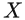 与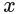 |
随机变量及它的一个取值 | “还不确定的量”与“某次取到的数” |
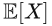 |
期望 | 按概率加权的平均值 |
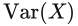 |
方差 | 围绕均值的平方偏离程度 |
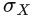 |
标准差 | 方差的平方根，与原量同单位 |
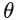 |
待推断参数 | 在本文中是网络权重和偏置 |
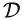 或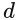 |
观测数据 | 用来约束模型的信息 |
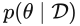 |
参数后验分布 | 看过数据以后对参数的认识 |
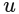 、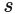 |
输入函数、输出函数 | 一条曲线输入，对应一条曲线或一个场输出 |
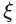 |
输出查询位置 | 想在什么时间或空间位置读取输出 |
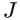 |
集合成员数 | 一共有多少组网络参数 |
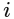 、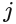 |
迭代编号、成员编号 | 第几次更新、第几个网络 |
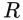 、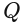 |
观测噪声协方差、人工参数扰动协方差 | 两种不同来源的协方差 |
本文同时使用
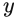
表示查询位置与观测向量，具体含义随上下文变化。为方便学习，本教程主要用 表示查询位置，用 表示观测向量。对照原文时要认清对象，不能只看字母。第 1 讲：不确定性、误差、量化与传播
先玩一分钟 · 01 / 10
三辆小车，跑到哪里？
同一辆小车可能每秒跑 0.9、1.0 或 1.1 米，三种情况机会相同。让三辆小车分别替它演一遍。
先猜：跑的时间变成两倍，最前面和最后面的小车会离得更远吗？
时间相同，速度的不同变成位置的不同。这就是不确定性传播。三辆车是三种可能情况，不是同一辆车同时出现在三个地方。
记住这一点：时间相同，速度的不同变成位置的不同。这就是不确定性传播。三辆车是三种可能情况，不是同一辆车同时出现在三个地方。
把直觉接回理论
S = V × T：位置 = 速度 × 时间。这里还没有给出真值，因此车之间的距离不是预测误差。
1.1 本讲要解决什么问题
学完后，你应当能够解释三组区别：不确定性与误差、量化与传播、输入不确定与模型参数不确定。
1.2 从 10 秒后的位移说起
先假设航行器做匀速直线运动：
其中
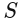
是位移，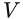
是速度，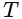
是时间。如果
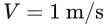
、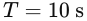
，则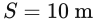
。输入和模型都确定，结果就是一个数。现在假设速度只有三种可能，各自概率为
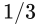
：| 速度 | 概率 | 10 秒后位移 |
|---|---|---|
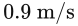 |
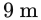 |
|
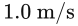 |
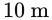 |
|
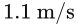 |
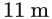 |
我们现在表达的是“一组可能结果及其可能性”。仅说“位移平均为 10 米”，会丢掉它还可能偏离 10 米的信息。
乘法为什么是一块面积
时间（秒） · 纵轴：速度（米/秒）
恒定速度时，速度曲线下的面积等于位移。
- 1先看高度：每秒走 2 米，所以速度线的高度是 2。
- 2再看宽度：走 3 秒，就把时间轴上 0 到 3 秒的范围选出来。
- 3长方形面积是 2×3=6。每一小段时间走的距离加起来，就是总位移。
1.3 不确定性量化是什么
不确定性量化，Uncertainty Quantification，简称 UQ，是识别、描述、推断、传播并检验不确定性的研究框架。
它不仅问“预测是多少”，还问：哪些因素拿不准？可能怎样变化？对结果有什么影响？这种判断是否可靠？
概率是描述不确定性的常用工具。概率既可以描述重复实验中的随机波动，也可以描述我们对某个固定未知量的知识不足。
例如网络参数可能在实际问题中被视为一个固定但未知的向量。贝叶斯方法给它一个概率分布，表达的是对它的认识，并不表示真实网络权重在物理世界中不断随机跳动。
1.4 不确定性传播是什么
不确定性传播，Uncertainty Propagation，是研究输入或参数的不确定性经过模型以后，输出如何变化。
在刚才的例子中：
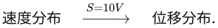
如果时间变成 20 秒，相同的三种速度会产生 18、20、22 米三种位移。速度没有更不确定，但模型对它的累积作用更大了。
传播对象也可以是参数：
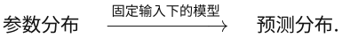
这条路径对理解本文尤其重要。
1.5 误差与不确定性为什么不同
如果预测为 10 米，真值为 12 米，绝对误差为：
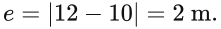
误差比较预测与真值；预测时真值往往还不知道，不确定性估计则描述基于当前信息的把握程度。
假设三个网络预测为 9.9、10.0、10.1 米，彼此差异很小，但真值仍然可能是 12 米。它们可能存在共同偏差。
因此，集合分散程度小，只说明成员之间意见接近。它能否代表实际未知程度，需要检验。
绝对值：只量距离，不分左右
位置（米）
预测误差是预测与真值的距离；它不等于一群预测之间的分散程度。
- 1先把预测值 10 放在数轴上。
- 2再标出真实值 12。只有拿到真值，才能比较预测错了多少。
- 3从 10 到 12 相隔 2 米。绝对值只保留这段距离，反过来相减也还是 2。
1.6 不确定性来自哪里
| 来源 | 例子 | 通常如何应对 |
|---|---|---|
| 偶然不确定性，aleatoric | 在给定建模条件下仍无法准确预知的观测噪声、扰动 | 描述统计规律，并在预测与决策中考虑它 |
| 认知不确定性，epistemic | 数据有限、参数认识不足、未见过某类工况 | 补充有代表性的信息、改进推断 |
| 模型差异或模型误差 | 用匀速模型描述实际加速运动，遗漏阻力或耦合项 | 改进模型，或显式描述模型差异 |
模型差异常与认知不足有关，也可以单独建模；表格不是三类互不相交的严格分类。偶然与认知的划分同样依赖我们已有的信息和模型。
例如把未测量的海流当成随机扰动；若以后能准确测量海流，其中一部分未知性就可能减少。不能简单断言“某种不确定性永远无法减少”。
1.7 对应到论文
本文 §2.2 假设输入函数已给定，训练输出受到独立零均值高斯噪声污染，而且噪声标准差已知。研究重点是有限、带噪声输出数据下的 DeepONet 推断与预测不确定性估计。
对某一次预测，输入函数和查询位置相同，而各网络参数不同：
图 2.2 展示的就是这组网络及其输出统计量。数据集包含许多不同输入，并不意味着同一次条件预测也在对输入进行随机采样。
1.8 自测
- 一组模型预测非常集中，是否足以证明预测准确？
- 速度分布通过运动模型变成位移分布，属于什么过程？
- 同一个输入交给参数不同的网络，是在研究哪种传播？
参考答案
- 不足以证明。模型可能共同有偏差，或者共同遗漏了重要物理机制。
- 不确定性传播；它属于 UQ 的重要环节。
- 网络参数不确定性到输出预测不确定性的传播。
本讲完成标准： 能用自己的话说明“误差需要真值作比较，不确定性是基于信息对未知程度的描述”。
第 2 讲：怎样描述一个不确定的数
先玩一分钟 · 02 / 10
平均都是 5 颗糖，就一样了吗？
每个圆点是一袋糖。三种糖果数量各占三分之一；把它们拉开，看看平均数是否会动。
先猜：一袋有 1、5、9 颗，和一袋有 4、5、6 颗，哪组更难猜中？
平均数告诉你中心在哪，分散程度告诉你可能离中心多远。只报平均数，会漏掉后半个故事。
记住这一点：平均数告诉你中心在哪，分散程度告诉你可能离中心多远。只报平均数，会漏掉后半个故事。
把直觉接回理论
三种等可能数量是 5−d、5、5+d。均值为 5，标准差为 d × √(2/3)；这里算的是已知分布的标准差。
2.1 随机变量与概率分布
随机变量可以先理解为“取值尚不确定、但可以描述其可能性的量”。随机变量用大写字母 表示，某次具体取值用小写字母 表示。
离散分布给每一个可能值分配概率。例如：
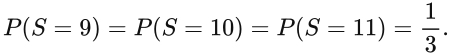
连续分布用概率密度
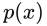
描述：
区间下的面积才是概率。连续变量在某个单点上的概率通常为零；密度的数值可以大于 1，并不违反概率规则。
2.2 均值：分布的一个中心指标
离散情形：
![\mu_X=\mathbb E[X]=\sum_k x_kP(X=x_k).](../assets/courses/deeponet-eki/block-e8841b9b89f8a44c.svg)
连续情形：

位移例子的均值为：
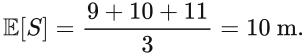
均值是按概率加权的平均，不保证等于最可能值，也不一定是某次能实际取到的值。比如只能取 0 或 2、各占一半的变量，均值为 1，但它不会取到 1。
期望：按机会大小分配重量
位置（米） · 纵轴：概率
横轴是可能取值，柱高是概率；本例的均值为 10 米。
- 1三种可能位置是 9、10、11 米。
- 2三种情况各占 1/3，所以每个位置放同样的重量。
- 3加权相加：(9+10+11)/3=10 米。虚线标出平衡点，它概括中心，不代表每次都走到那里。
2.3 方差与标准差：有多分散
方差定义为：
标准差是方差的平方根：

位移例子的方差为：
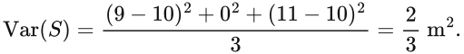
其标准差为
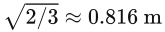
。方差的单位是原单位的平方，标准差与原量单位相同，所以标准差更容易直观解释。方差：先看离多远，再把距离平方
取值（米） · 方块面积：偏差平方（平方米）
平方避免左右抵消，并让较大的偏离占更大分量。
- 19、10、11 距离均值 10，分别是 −1、0、1。正负偏移相加会抵消。
- 2平方以后得到 1、0、1。图中的两个同样大的小方块，各表示 1 平方米。
- 3按三个等可能结果平均：(1+0+1)/3=2/3 平方米；再开平方才得到标准差，约 0.816 米。
2.4 已知分布的方差与样本方差不要混淆
如果只有 个样本
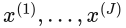
，常使用：
分母
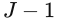
是常用的样本方差修正；在独立同分布且方差有限等条件下，它给出总体方差的无偏估计。同样的 9、10、11：若它们是已知的三个等概率可能值，方差是
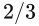
；若它们是用来估计未知分布的三个样本，样本方差是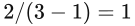
。对象不同，答案不同。本文用 计算集合样本方差。不过 EKI 成员通过更新相互关联，不能仅凭这个分母就断言它给出了严格无偏的贝叶斯后验方差。
2.5 高斯分布：常用但有条件的描述
正态分布，也叫高斯分布，记为：
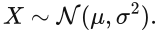
本教程统一把第二个参数写为方差。其密度为：
![p(x)=\frac1{\sqrt{2\pi}\sigma}
\exp\left[-\frac{(x-\mu)^2}{2\sigma^2}\right].](../assets/courses/deeponet-eki/block-690ca1f1b19f4445.svg)
例如
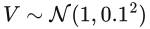
表示平均速度为 1 m/s、速度标准差为 0.1 m/s。正态分布的特点是对称、单峰，由均值和方差完全确定。当变量确实服从该正态分布时：
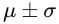
包含约 68.27% 的概率质量。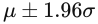
包含约 95% 的概率质量。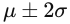
包含约 95.45% 的概率质量。
“均值 ± 两倍标准差”并非对任意分布都具有约 95% 的含义。非线性传播以后，输出也不一定继续服从高斯分布。
正态分布：中心、宽度与高度一起看
取值 x · 纵轴：概率密度
点线 N(0,1)、虚线 N(1,1)、实线 N(1,4)；括号中第二项是方差。
- 1虚点线：均值 μ=0，标准差 σ=1，曲线围绕 0 对称。
- 2虚线：把 μ 改为 1，整条曲线向右平移，宽度不变。
- 3实线：保持 μ=1，把 σ 改为 2，曲线更宽、峰更低。前面的归一化系数使总面积仍为 1。
2.6 分位数与区间
累积分布函数是
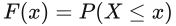
。连续且适当严格递增时，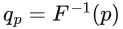
是 分位数。等尾 95% 区间为：
对于偏斜分布，分位数区间可以不以均值为中心。它描述的是所采用分布的概率质量；这个分布是否符合真实问题，还要另行验证。
三个常见区间术语需要区别：
| 名称 | 典型对象 | 概率解释 |
|---|---|---|
| 频率学派置信区间 | 固定未知参数 | 重复抽取数据并构造区间时，区间程序以指定频率覆盖固定参数 |
| 贝叶斯可信区间 | 给定数据后的未知参数或潜在量 | 在所采用的后验分布下，量落入区间的条件概率 |
| 预测区间 | 尚未观测的未来量 | 描述未来量的分布，预测对象决定是否包括观测噪声 |
本文将 称为 confidence interval。阅读时先把它准确理解为“集合均值 ± 两倍集合标准差形成的点态带”，不要仅凭名称赋予它严格的 95% 置信保证。
2.7 标准差与均值估计的标准误差
假设你增加样本数，可能更准确地估计均值，但原分布不一定变得更窄。
在独立同分布、方差有限等条件下，样本均值的标准误差约为 。它描述“均值估计有多不准确”； 描述“分布本身有多分散”。
因此，不能把神经网络集合预测的标准差除以 ，再称为目标输出的不确定性带。EKI 成员的相关性也使简单的独立样本标准误差公式需要额外审查。
2.8 对应论文与手算
读式（2.21）–（2.22）：对同一输入与查询位置，先收集 个输出，然后计算均值和样本标准差。式（2.2）–（2.3）则通过高斯噪声及似然描述输出观测的不可靠性。
若三个网络输出 9、10、11 米，则集合均值为 10 米，样本标准差为 1 米， 米。这是按该规则算出的区间，不是由这三个数自动证明的 95% 可靠区间。
2.9 自测
- 噪声标准差为 0.2 时，其方差是多少？
- 分布的均值相同，是否意味着不确定性相同？
- 1000 个网络变成 10000 个网络，输出分布的标准差是否必然降为原来的 ？
参考答案
- 方差为 。协方差矩阵对角线上通常放方差。
- 否。例如 与 的均值相同，分散程度很不一样。
- 否。增加成员数可能改善分布统计量的近似，并不按该比例缩小目标分布。标准误差与分布标准差也不能混用。
本讲完成标准： 能计算均值与样本标准差，能说明“±2 标准差”的解释依赖分布与验证。
第 3 讲：协方差、相关性与随机函数
先玩一分钟 · 03 / 10
走两步：一起偏，还是互相抵消？
每一步都可能向左或向右偏 1 米。每一步单独看完全一样，合起来却可能很不一样。虚线是第一步，实线是第二步。
先猜：如果第一步向左，第二步总向右，最后还会偏离起点吗？
除了知道每一步有多不准，还要知道它们怎样一起变化。这种关系会影响最后的总偏差。每一行是一种等可能情况。
记住这一点：除了知道每一步有多不准，还要知道它们怎样一起变化。这种关系会影响最后的总偏差。每一行是一种等可能情况。
把直觉接回理论
Var(X+Y) = Var(X) + Var(Y) + 2Cov(X,Y)。同向、独立、反向时，两步之和的方差分别为 4、2、0 平方米。
3.1 只知道每个量的标准差够不够
假设连续两个时间段中的速度误差分别为 ，每个时间段长度为 1 秒。累计位移误差为：
即使两个误差的均值都为 0、方差都为 1，累计误差也取决于它们怎样共同变化。
- 若 ，同向误差累积，。
- 若二者独立，。
- 若 ，完全抵消，。
每个时间点的均值和方差一样，最终传播结果却完全不同。缺少的信息就是相关结构。
3.2 协方差描述共同变化
正协方差表示倾向于同向偏离，负协方差表示倾向于反向偏离。并且：
相关系数把协方差除以各自标准差，在标准差非零时定义为：

它位于 ，刻画线性相关程度。独立通常推出协方差为零（相关矩存在时）；反过来不成立。例如对称的 与 协方差为零，却明显不独立。
协方差里的乘积，什么时候是正的？
X 的偏移 · 纵轴：Y 的偏移
圆点与加号表示正乘积，叉号表示负乘积；本例协方差为 0。
- 1用四个等可能点 (±2,±1) 作例子，两个均值都为 0。先看横向偏移。
- 2再看纵向偏移。同在均值的右上或左下，两个偏移相乘为正；在另外两象限则为负。
- 3四个乘积是 +2、−2、−2、+2，平均为 0。正负共同变化会抵消；一般不能由协方差为 0 推出独立。
3.3 协方差矩阵
对随机向量 ：
其中 表示转置。对角线是各变量的方差，非对角线描述成对的共同变化。合法协方差矩阵对称、半正定；半正定意味着对任意向量 ，都有 。
样本交叉协方差的形式为：

当 是参数向量、 是预测观测向量时，这个矩阵就成为后续卡尔曼更新的核心：它记录“参数怎样变化时，预测通常怎样变化”。
协方差矩阵：看宽度，也看倾斜
X · 纵轴：Y（均值均为 0）
绿色椭圆为二维高斯的一条等密度轮廓，不是所有点必定落在其中的边界。
- 1第一个对角元素给 X 的方差。本例 Var(X)=1。
- 2第二个对角元素给 Y 的方差。本例 Var(Y)=1。灰色圆表示二者协方差为 0 的对照。
- 3非对角元素 0.8 使等密度轮廓沿右上方向倾斜：X 偏大时，Y 倾向于也偏大。它不会改变这里的两个边际方差。
3.4 随机过程：不确定对象从一个数变成一条函数
随机过程 是按时间或空间索引的一组随机变量。
- 固定时间 ， 是一个随机变量。
- 固定一次抽样结果， 是一整条样本曲线。
均值函数与协方差函数定义为：
如果位移是速度随时间的积分，则在积分与期望等运算合法的条件下：

![\mathbb E[S(T)]=\int_0^T m(t)\,dt,
\qquad
\operatorname{Var}(S(T))=
\int_0^T\int_0^T C(t,t')\,dt\,dt'.](../assets/courses/deeponet-eki/block-24387276f61b8f3e.svg)
第一遍先读出含义：累计输出的方差需要考虑所有时间对之间的协方差。只知道每个时间点的标准差，通常不足以确定整段轨迹的不确定性。
3.5 高斯过程是什么
高斯过程，Gaussian Process，简称 GP，记为：
它要求任意有限个位置处的函数值构成联合高斯向量：
仅仅“每个时间点单独服从高斯分布”还不足以定义高斯过程，联合分布也必须满足上述性质。
论文使用的平方指数核为：
![C(t,t')=a^2\exp\left[-\frac{(t-t')^2}{2\ell^2}\right].](../assets/courses/deeponet-eki/block-f34d87e299e670af.svg)
- 控制函数波动的幅度，点态方差为 。
- 是长度尺度，控制相关性随时间或空间间隔衰减的快慢。
- 较大通常得到变化较慢的样本曲线； 较小通常变化较快。
在相同点态方差下，改变长度尺度仍会改变积分后的方差，因为相关结构变了。
核函数：隔得越远，联系怎样变弱
间隔 |t−t′| · 纵轴：协方差
虚线 ℓ=0.2，实线 ℓ=0.5；都是教学参数，a 固定为 1。
- 1本例 a=1。同一位置的间隔为 0，协方差达到 a²=1。
- 2取 ℓ=0.2，两点相隔 0.4 时，协方差 exp(−2)≈0.135。
- 3把长度尺度改为 ℓ=0.5，同样间隔 0.4 下，协方差约 0.726；联系随距离减弱得更慢。
3.6 为什么不能在每个时间点独立抽样再拼成曲线
如果目标过程有平滑、相关的曲线结构，每个位置独立抽样会破坏这种结构。
正确的有限网格做法是先建立联合协方差矩阵 ，再联合采样。若 ，取 ，则：
这里 可以通过 Cholesky 分解求得；数值实现有时会加很小的对角修正来改善矩阵稳定性，这个修正也会微调所采样的协方差。
3.7 对应到论文
论文 §3.1 式（3.7）–（3.8）用 GP 生成输入函数，其中反导数例子取 、，并在 100 个传感器位置读取输入。
这里 GP 首先承担的是“生成具有指定分布与相关结构的输入曲线”的角色。它不意味着论文用 GP 替代了 DeepONet，也不意味着 DeepONet 输出必定是高斯过程。
区分两种问题：
- 从 GP 生成许多输入函数来训练和测试算子。
- 给定某一条输入函数，评估网络参数集合带来的预测分散。
本文的集合预测统计量主要对应第二种。若要计算输入随机性与参数未知性共同导致的输出分布，还需要额外的联合传播。
3.8 自测
- 两个时间点标准差相同，是否足够决定累计位移的标准差？
- 协方差为零是否意味着独立？
- GP 的一次抽样得到的是一个数还是一条函数？
参考答案
- 不够，还需要它们之间的协方差。
- 一般不意味着。联合高斯等特殊条件下，不相关才可推出独立。
- 理论上得到一条样本函数；有限网格计算得到这条函数在多个位置的联合取值。
本讲完成标准： 能解释为什么同样的点态标准差，在不同相关结构下可以产生不同的轨迹不确定性。
第 4 讲：不确定性怎样经过模型传播
先玩一分钟 · 04 / 10
数字珠子，穿过一台小机器
五颗珠子分别写着 −2、−1、0、1、2，机会相同。机器可以把数字翻倍，也可以把数字平方。
先猜：负数平方会去哪里？先求平均再平方，和先平方再求平均，一样吗？
机器把输入的每一种可能变成输出的一种可能。平方会把正负数送到同一个非负位置，输出的形状也跟着改变。
记住这一点：机器把输入的每一种可能变成输出的一种可能。平方会把正负数送到同一个非负位置，输出的形状也跟着改变。
把直觉接回理论
一般 E[f(X)] ≠ f(E[X])。本例输入均值为 0；平方后输出均值为 2，而平均输入的平方为 0。
4.1 传播的对象是分布
设 是不确定输入，模型为 。不确定性传播的目标是由 的分布得到 的分布，或至少得到输出的均值、方差、分位数与事件概率。
例如我们可能关心：
知道输出平均值，并不等于知道越过安全阈值的概率。
从分布的角度，输出分布是输入分布经过 的“推前”，也常称为 pushforward。对任意输出事件集合 ：
这个定义并不要求输出高斯，也不要求 可逆。
4.2 线性或仿射传播可以准确计算
若：
且相关矩存在，则：
方差乘 ，标准差乘 。这些矩公式不要求输入高斯；若输入高斯，输出还可以确定为高斯。
例如：
向量版本为：
非对角协方差通过这个式子参与传播，不能随意删除。
为什么方差要乘 a 的平方
取值 · 纵轴：概率密度
虚线输入 N(0,1)，实线输出 N(1,4)。一般线性矩公式不要求输入是高斯。
- 1输入取 X~N(0,1)，令 Y=2X+1。加 1 让中心从 0 移到 1。
- 2每个离中心的距离都被乘 2，所以标准差从 1 变成 2。
- 3方差是标准差的平方，因此从 1 变成 4。实线输出比虚线输入宽，密度峰更低。
4.3 非线性传播：平均输入的输出不等于平均输出
一般有：
考虑 ，：
进一步有 。输出始终非负、向右偏斜，并不服从高斯分布。
如果机械使用均值 ± 两倍标准差，会得到 ，其下界小于零，而真实输出不可能为负。这说明均值和方差不能完整替代分布形状。
对应神经网络时，同样通常有：
“先平均网络参数，再预测”和“先预测，再平均输出”一般不等价。本文采用后者。
弯曲的函数，会改变平均的顺序
输入 x · 纵轴：f(x)=x²
本图使用两点分布演示 x²；正文的标准正态例子也给出 0 与 1 的差别。
- 1用 X=−1 或 +1、各占一半的离散例子；平均输入是 0。
- 2先平均再平方，得到 f(0)=0，图中是底部的菱形。
- 3先平方，两种输入都变成 1；再平均仍是 1。圆点对应曲线上的实际输出，不能用平均输入代替。
4.4 蒙特卡洛传播：最直接的通用思路
蒙特卡洛方法的步骤是：
- 从输入分布抽取 。
- 逐个运行模型，得到 。
- 用输出样本估计均值、方差、分位数或事件概率。
例如：

其中 表示条件成立时取 1，否则取 0。
优点是适用范围广，不要求模型线性。代价是需要多次模型运行；极小概率事件也可能很难被普通采样充分捕捉。
对独立样本的均值估计，在有限方差等条件下，标准误差按 下降。想把该误差约减半，通常要约四倍样本。这个结论描述采样估计误差，不是物理不确定性被样本数消除了。
选做实验：以下代码是独立的小练习，不是论文的 DeepONet 代码。
import numpy as np
rng = np.random.default_rng(42)
sample_count = 100_000
v = rng.normal(loc=1.0, scale=0.1, size=sample_count)
s = 10.0 * v
print("线性传播的样本均值、标准差：", s.mean(), s.std(ddof=1))
print("线性传播的 2.5%、97.5% 分位数：", np.quantile(s, [0.025, 0.975]))
x = rng.normal(size=sample_count)
y = x ** 2
print("平方后的样本均值、方差：", y.mean(), y.var(ddof=1))
print("平方后的 2.5%、97.5% 分位数：", np.quantile(y, [0.025, 0.975]))
预期：第一组均值、标准差接近 10、1；第二组均值、方差接近 1、2。平方后的分位数区间明显不对称，且下界非负。
4.5 一阶线性化：用局部直线近似曲线
对光滑函数，在均值附近展开：
于是得到近似：
向量版本用雅可比矩阵 ：
这在不确定性较小、函数在相关区域较接近线性时可能有效。对 、，一阶导数为零，这个近似错误地给出零方差，正好说明局部线性化可能失效。
一阶近似：在附近，用切线代替曲线
输入 x · 纵轴：输出 y
实线是真实曲线，虚线是切线；在 μ=0 处，一阶方法还会遗漏 x² 的全部方差。
- 1取 f(x)=x²，展开点 μ=1。先站在点 (1,1) 上。
- 2这一点的斜率是 f′(1)=2，虚线切线为 y=1+2(x−1)。
- 3往右走 0.3，切线给出 1.6，真实曲线是 1.69。距离近时可能好用，不能把局部直线当成处处准确。
4.6 其他方法先建立位置感
| 方法 | 主要思路 | 需要注意 |
|---|---|---|
| 解析传播 | 直接推导输出分布或矩 | 适用模型有限，但可作为基准 |
| 蒙特卡洛 | 大量输入采样并逐次求解 | 求解器代价、稀有事件、采样误差 |
| 一阶或高阶展开 | 在局部近似模型 | 强非线性、偏斜、多峰时可能失准 |
| 无迹变换 | 用少量有权重的代表点近似若干统计量 | 不是完整分布的通用精确求解 |
| 多项式混沌，PCE | 在随机变量的多项式基下展开输出 | 维数、光滑性、输入分布与截断阶数影响效果 |
理解本文时，先掌握集合传播即可；其他方法用于建立更完整的知识地图。
4.7 传播不一定越来越宽
累积误差可能扩大，但不是普遍定理。例如：
这个收缩系统使初值不确定性随时间减小。动态系统中的输出分布取决于稳定性、外部扰动、非线性与相关结构。
4.8 对应到论文与自测
本文式（2.21）–（2.22）在给定输入 和位置 下，把参数集合传播为输出集合。它与蒙特卡洛式的“多次前向计算再统计”有共同结构，但参数集合由 EKI 更新得到，不能未经论证就视为独立的精确后验样本。
- ，，输出均值是否为零？
- 输入高斯、模型非线性，输出是否必定高斯？
- 为什么平均参数的网络不一定等于网络预测的平均？
参考答案
- 否，输出均值为 1。
- 否，平方变换就是反例。
- 因为非线性函数一般不满足“函数与取期望交换”。
本讲完成标准： 能手算线性传播，能解释非线性传播为什么通常需要采样或近似。
第 5 讲：从正问题到贝叶斯反问题
先玩一分钟 · 05 / 10
找宝藏：新线索怎样改变猜测？
你原先猜宝藏在 4 米附近，标准差是 2 米。探测器带来一个新读数。曲线越高，表示那个位置越受支持；越窄，表示猜测越集中。
先猜：新线索很模糊时，要不要完全丢掉原来的猜测？
把原来的猜测和新线索合起来，就得到更新后的猜测。更清楚的线索通常能把猜测拉得更近、收得更窄。
记住这一点：把原来的猜测和新线索合起来，就得到更新后的猜测。更清楚的线索通常能把猜测拉得更近、收得更窄。
把直觉接回理论
在独立高斯模型中，后验精度 = 先验精度 + 观测精度；精度是方差的倒数。虚线表示各位置对读数的支持程度（似然），不把读数当成绝对真值。
5.1 正问题与反问题
正问题：已知参数，计算观测或输出。反问题：已知观测，推断参数。
例如阻力模型 ：给定 与速度 求阻力是正问题；测到速度与阻力以后推断 是反问题。
统一写成：
其中 把参数映射成可与数据比较的模型预测， 描述观测误差的协方差。
在本文中， 是全部 DeepONet 参数； 是该网络对所有选定训练输入与查询位置的输出堆叠。神经网络训练因此可以表述成一个高维参数反问题。
5.2 为什么一个最优参数不够
数据有限且带噪声时，常有多组参数都能较好解释数据。如果只给一个最优解，就无法直接表达这种歧义。
贝叶斯方法保留一组参数的相对合理程度，用后验分布表示。
5.3 先验、似然、后验
先验 ： 看这批数据以前，对参数的分布描述。它包含已有知识、约束或建模选择；不是看到当前结果后随意修改的理由。
似然 ： 假设参数为 ，当前数据有多符合观测模型。它作为 的函数使用，不是参数本身的概率密度。
后验 ： 看过数据以后，对参数的更新认识。
贝叶斯公式为：

符号 表示“差一个与 无关的归一化常数”。分母 使后验积分为 1。
贝叶斯公式：先相乘，再归一化
参数 θ · 纵轴：密度 / 似然
点线：先验；虚线：似然；实线：后验。似然作为 θ 的函数使用，通常不是 θ 的概率密度。
- 1点线先验为 θ~N(0,1)，表达看到这次数据以前的认识。
- 2观察 d=1，噪声标准差 0.5。虚线似然比较每个 θ 对这个读数的解释程度。
- 3把先验和似然逐点相乘，再除以共同常数 p(d)，得到实线后验 N(0.8,0.2)。总面积重新变成 1。
5.4 高斯似然怎样体现噪声大小
固定 时，高斯似然有：
![p(d\mid\theta)\propto
\exp\left[-\frac12
(d-\mathcal H(\theta))^TR^{-1}
(d-\mathcal H(\theta))\right].](../assets/courses/deeponet-eki/block-555326e4ebb4c812.svg)
如果 ，就按 给残差平方加权。
- 观测很准确，同样的残差会受到较强惩罚。
- 观测噪声很大，同样的残差相对更可以容忍。
因此，噪声水平不是无关紧要的设置。错误地把噪声设得很小，可能把模型推向拟合噪声，并产生不恰当的确定感。
本文假设输出噪声标准差已知；它没有同时解决任意未知噪声模型的识别问题。
5.5 一个可以手算的后验
设未知量本身是一个标量：
且先验与观测噪声独立。后验仍是高斯：
其中逆方差也叫精度：较小方差对应较大权重。
取 、、观测 、：

后验标准差为 。更新后的中心更接近较准确的观测，同时分布比原先集中。
这也是下一阶段理解卡尔曼更新的最简单例子。
先加精度，再按精度分配权重
上图：信息精度 · 下图：参数值
条形长度表示精度；数轴上的圆点表示按精度加权后的均值。
- 1先验方差为 1，所以精度是 1；先验均值为 0。
- 2观测噪声方差为 0.25，所以精度是 4。更小的方差带来更大的权重。
- 3总精度为 5，后验方差是 1/5=0.2。均值按 1:4 加权：(1×0+4×1)/5=0.8。
5.6 最大后验估计与优化的关系
若先验为 ，最大后验估计，Maximum A Posteriori，简称 MAP，对应最小化：

其中 。第一项要求拟合数据，第二项约束偏离先验的程度。
零均值、各向同性高斯参数先验与常见的二范数正则有联系，但一个最优点仍只是后验的一个摘要，不能完整代替后验分布。
对神经网络，标准高斯权重先验也不等于“函数空间完全中立”。架构与权重分布共同决定了模型倾向于生成什么样的函数。
MAP：拟合数据与偏离先验的代价相加
参数 θ · 纵轴：代价 Φ
本图沿用上一小节的一维高斯模型，实线最低点为 MAP=0.8。
- 1虚线数据项在 θ=1 时最小：只看读数，最愿意选 1。
- 2点线先验项在 θ=0 时最小：偏离原先中心越远，代价越大。
- 3实线把两项相加，在 θ=0.8 达到最小。这个最优点是后验的一个摘要，不能代替整条后验曲线。
5.7 可辨识性：数据能否分清参数
若 ，观测可能较好确定总和，却无法唯一分清两者。不同参数组合都可能产生相似观测。
这叫可辨识性问题。后验可以出现很强的参数相关性；非线性问题还可能多峰。更多重复的同类观测未必能解决所有歧义，可能需要不同类型的激励或观测。
神经网络还存在参数置换等对称性：参数不同，不代表预测函数一定不同。对应用而言，预测空间的不确定性往往比逐个权重的区间更直接。
5.8 计算后验的几条路线
| 方法 | 大致做什么 | 主要取舍 |
|---|---|---|
| 解析推导 | 直接得到后验公式 | 多用于结构简单或共轭问题 |
| MCMC，包括 HMC | 构造以目标后验为不变分布的采样过程 | 混合、收敛诊断和计算代价重要 |
| 变分推断，VI | 在选定分布族内优化近似后验 | 分布族与优化可能限制近似质量 |
| 集合方法，包括本文 EKI 变体 | 用有限成员及协方差更新近似未知性 | 高效性与近似质量都需要评估 |
这些方法不具有完全相同的理论保证。尤其不能把“训练了一组参数”直接等同于“取得精确后验独立样本”。
5.9 对应论文与自测
对照式（2.3）似然、（2.4）贝叶斯公式、（2.5）观测模型、（2.6）–（2.7）后验表达式。
- 似然 与后验 是否相同？
- 手算例子中，为什么后验均值为 0.8，而不是先验与观测的简单平均 0.5？
- 找到 MAP 后，是否已经知道后验方差？
参考答案
- 不同。后验还包含先验与归一化；二者的条件方向也不同。
- 观测方差比先验方差小，因此观测精度更高、权重更大。
- 没有。一个最优点不提供完整的分布形状与分散程度。
本讲完成标准： 能指出先验、似然、后验各自表达什么，并手算标量高斯更新。
第 6 讲：从参数分布到预测分布
先玩一分钟 · 06 / 10
位置猜得不准，尺子也会抖
我们给位置保留两种等可能猜测（菱形）。测量时，尺子还可能向左或向右抖一下，于是读数有四种等可能情况（圆点）。
先猜：把尺子换成完全不抖的，所有位置上的不确定性都会消失吗？
关于位置的未知，和测量时新加的抖动，是两件事。预测真实位置与预测下一次读数，需要的范围可能不同。
记住这一点：关于位置的未知，和测量时新加的抖动，是两件事。预测真实位置与预测下一次读数，需要的范围可能不同。
把直觉接回理论
这个两点分布例子中，两种误差独立且均值为零：读数方差 = 位置方差 a² + 测量噪声方差 b²。
6.1 先分清预测对象
给定新输入 ，至少有两种不同对象：
- 不含新增测量噪声的模型输出 。
- 未来实际记录的观测 。
其中 根据已知训练数据推断， 是未来测量噪声。即使两者的预测均值相同，预测方差也可能不同。
例如你关心“航行器真实位移可能是多少”和“下一次传感器读数可能是多少”，就不应无条件使用同一种区间。
6.2 参数后验怎样变成输出分布
理论上，从后验抽参数并运行模型：
输出集合近似参数未知性引起的输出分布。它是第 4 讲传播的一个具体应用，只是传播起点从输入分布换成了参数后验。
预测未来观测时，还需依照观测模型加入未来噪声。其分布为：

“对参数积分”表示把所有可能参数的预测按其后验合理程度加权，而不是只选一组参数。
预测积分：把许多条件预测按权重叠起来
未来读数 d* · 纵轴：密度
这是三点参数分布的离散类比，不是论文的实际后验样本或实验结果。
- 1把参数简化为 −1、0、1 三种可能，权重为 1/4、1/2、1/4。
- 2令读数 d*=2+θ+η，η~N(0,0.16)。三条细线是已经乘上各自权重的条件预测。
- 3逐点相加得到实线混合分布，均值为 2，方差为 0.5+0.16=0.66。连续参数的积分可理解为更细的加权相加。
6.3 全方差公式：两层未知怎样组合
一般的全方差公式为：
可以把它读成：“每一类内部的平均波动”加上“各类均值之间的波动”。
若未来噪声独立、零均值，且已知方差为 ：
若观测噪声方差还依赖输入或参数，则第一项之外的噪声贡献应写成相应条件方差的期望，不能机械加一个固定常数。
这种分解依赖所采用的模型，不能自动包含所有结构误差、数据偏差与未建模物理。
总方差：相加的是方差，不是标准差
横向长度：方差（平方米）
沿用正文手算：潜在量的标准差约 0.447，未来读数约 0.671。
- 1绿色部分是参数未知带来的输出方差 0.2。
- 2虚框部分是未来独立测量噪声的方差 0.25。它不是又一份参数未知。
- 3在独立加性噪声模型下相加，得到 0.45；总标准差是 √0.45≈0.671，而不是 √0.2+√0.25。
6.4 延续上一讲的手算
上一讲得到：
若新问题只是预测潜在量 ，其均值为 0.8，方差为 0.2。
若预测下一次独立带噪声观测，噪声方差仍为 0.25，则：
潜在量的标准差约为 0.447，未来读数的标准差约为 0.671。未来读数更不确定，因为还包含一次新的测量噪声。
6.5 输入也不确定时怎么办
如果新输入 也只有一个分布，就应继续对输入传播。一般有：
这里比较了“固定输入时的输出分散”与“不同输入引起的条件均值变化”。如果参数与输入相关，必须使用正确的条件联合分布，不能擅自分别独立抽样。
一种常见数值实现是两层抽样：外层抽整条输入函数，内层对参数或条件输出抽样；如果输入和参数的独立性有合理依据，也可以按相应联合分布成对抽样。
连续时间输入必须保留第 3 讲讨论的相关结构。
6.6 本文实际计算了什么
式（2.21）–（2.22）对给定 计算网络集合的输出均值和标准差：
这些公式没有在输出层再独立叠加一次未来测量噪声。§3 的覆盖率比较对象是数值求解器生成的干净测试输出，而不是新增带噪传感器读数。
另一方面，网络参数集合受到训练噪声模型、人工扰动 以及验证调节的共同影响。作者利用验证残差与集合分散程度的相对大小调节 ，因此不能简单宣称其集合标准差已经实现了严格、完整的偶然与认知不确定性分离。
最准确的阅读方式是：它提供给定输入下、由所采用 EKI 推断与调节过程生成的输出集合分散估计，并通过测试数据考察其信息价值。
6.7 有哪些误差可能没被覆盖
可以在概念上写成：
表示模型差异。若建模时设它为零，参数分布可能无法充分解释其影响。
所有网络使用相同错误物理假设，或都没有见过某类海况，即使成员很多也可能共同有偏差。这是“模型内不确定性”与“现实总未知性”之间的重要区别。
6.8 自测
- 预测真实位置与预测下一次传感器读数，区间为什么可能不同？
- 已知网络输出方差为 1，未来独立零均值观测噪声方差为 4，未来观测方差是多少？
- 对固定输入统计一组网络输出，是否已经包含该输入本身的随机变化？
参考答案
- 后者还包含未来测量噪声；前者是否包含其他物理随机性，取决于定义与模型。
- 在上述独立加性设定下为 ，标准差为 。
- 没有。要包括输入随机性，还需对输入分布进行传播。
本讲完成标准： 看到一条不确定性带时，会先确认“它针对潜在输出还是未来观测，条件于哪些已知量”。
第 7 讲：从普通函数到 DeepONet
先玩一分钟 · 07 / 10
水龙头的曲线，变成水桶的曲线
上图记录每秒流进多少水，下图记录桶里已经积了多少水。改变开水方式，再问“第几秒，桶里有多少水”。
先猜：越开越大的水龙头，积水曲线会越走越陡吗？关心水量时，能只看最后一秒的流速吗？
一个完整的输入过程，决定另一个完整的输出过程，这叫算子。Branch 读取进水曲线，Trunk 接收想查询的时间，再一起给出水量。
记住这一点：一个完整的输入过程，决定另一个完整的输出过程，这叫算子。Branch 读取进水曲线，Trunk 接收想查询的时间，再一起给出水量。
把直觉接回理论
本动画用积分直接计算 s(t)=∫₀ᵗu(τ)dτ，作为正确答案。DeepONet 学的是这种曲线到曲线的对应关系；这里没有运行已训练的神经网络。
7.1 普通回归与算子学习有什么区别
普通函数可以把一个数或向量映射成另一个数或向量。例如 。
算子把一整个函数映射成另一个函数。例如反导数算子：

输入 是一条曲线，输出 是另一条曲线。不同输入曲线对应不同输出曲线。
对于动力学，输入可以是整段外力历史，输出是响应轨迹。如果初始状态也会变化，则必须把初始状态作为额外条件编码，不能期待一个没有收到初始状态信息的模型自动区分所有初值问题。
7.2 一个反导数手算例子
若输入为 ，则：

在 处，。注意，这不是输入函数在该点的值 。
网络要学习的是“整条输入曲线怎样决定输出”，而不是把查询点代入输入函数就结束。
积分：把许多窄条的面积加起来
时间 τ（秒） · 纵轴：流速（升/秒）
绿色区域为 0 到 0.5 秒的累计水量；流速值 2.5 升/秒与水量 1.125 升是不同量。
- 1曲线高度 u(τ)=2+τ 表示那个时刻的流速。
- 2把 0 到 0.5 秒分成小段，每个窄条的面积约为高度乘时间宽度。
- 3把窄条面积相加，得到累计水量；精确积分为 2×0.5+0.5×0.5²=1.125 升。本例线性函数的中点矩形和也恰好精确。
7.3 怎样把一条函数送进计算机
最常见的做法是选择固定传感器位置 ，读取：
这是一条函数的有限采样表示。原始 DeepONet 通常要求这些传感器位置在不同样本之间保持一致。
有限采样不等于知道任意函数的全部信息。如果传感器太稀疏，两条不同输入可能产生几乎相同的观测向量，算子学习也会受限。
7.4 Branch 与 Trunk 各做什么
DeepONet 的两部分为：
- Branch 网络：接收输入函数的采样值，输出 个系数 。
- Trunk 网络：接收查询位置 ，输出 个特征 。
标量输出情况下，二者通过点积组合：

这里 是内部特征维数，不是查询位置数，也不是集合成员数。
可以把它理解为：Trunk 提供一组可学习的“输出形状特征”；Branch 根据输入曲线，决定怎样组合这些特征。两部分共同训练，所以这些特征通常也不是事先固定的物理基函数。
对时间轨迹，；对时空场，。改变查询位置，就能在不同位置读取输出，但读取更密集不代表预测精度自动提高。
Branch × Trunk：逐项相乘，再加起来
查询位置 ξ · 纵轴：各项贡献 / 输出
虚线 2ξ，点线 0.5ξ²，实线两者之和；本图不运行训练好的 DeepONet。
- 1用两个教学系数 b=[2,0.5] 表示 Branch 的输出。虚线第一项是 2ξ。
- 2用 t(ξ)=[ξ,ξ²] 表示两项 Trunk 特征。点线第二项是 0.5ξ²。
- 3逐项相乘再求和得到实线。在 ξ=0.5 处，2×0.5+0.5×0.25=1.125。这里用解析特征演示点积，真实网络的两组特征共同训练。
7.5 训练数据长什么样
设有 组输入与输出函数 ，每条输出在 个查询位置记录：
确定性 DeepONet 常通过最小化均方误差训练：
![\mathcal L(\theta)=\frac1{NP}\sum_{l=1}^{N}\sum_{k=1}^{P}
\left[\mathcal G_\theta(u_l)(\xi_{lk})-d_{lk}\right]^2.](../assets/courses/deeponet-eki/block-857b7006c7151209.svg)
需要区分“函数对数量 ”与“标量观测总数 ”。一条函数上密集采样得到很多点，这些点仍共享同一个输入函数，不能简单看成许多完全独立的新工况。
因此，划分训练集与测试集时，按整条输入函数划分通常比把同一条曲线上的点随机混入两边，更能检验对新函数的泛化。本文按输入/输出函数对进行相应用途划分。
7.6 贝叶斯 DeepONet 改变了什么
网络结构可以保持一致，但参数 由一个点估计扩展为分布描述：
若有多组合理参数，则固定同一个 ，可以产生多种预测：

不同 对应不同网络参数组，包含 Branch 与 Trunk 的权重和偏置。不是把同一个确定性网络对完全相同的输入重复运行若干遍，就自动产生有效 UQ。
本文各成员通过 EKI 中的集合协方差相互影响，属于联合更新；其机制不同于把许多网络彼此独立地训练完再汇总的普通深度集成。
一组网络输出，怎样变成均值与带宽
查询位置 x · 纵轴：预测输出
三条细线是成员，虚线是均值，阴影为均值 ± 两倍样本标准差。
- 1用三条教学预测曲线 9x、10x、11x，表示三个成员对同一输入的输出。
- 2在每个查询点，先把三个输出平均，得到中间的 10x。
- 3按 J−1 计算样本标准差，得到 σ̂(x)=x（x≥0）。在 x=1 时，均值 10、标准差 1，带为 [8,12]；这本身不保证 95% 覆盖。
7.7 本文的网络与数据规模
根据 §3 与表 3.1：
- Branch 和 Trunk 均使用 3 个隐藏层，每层 128 个单元，输出特征维数为 128。
- Branch 使用 ReLU，Trunk 使用 Tanh。
- 反导数例子的参数数为 79,232；另外两个例子为 79,360。
- 集合成员数 。
这意味着每个成员都有约 8 万个参数，共有 5000 组参数。这里的“高维”主要指待推断网络参数维数，不是说物理空间一定有很高维。
7.8 对应论文与自测
阅读 §2.1、图 2.1，先说出每一根输入箭头传递的是什么，再读图 2.2，理解它为什么复制出多组网络。
- Branch 接收查询时间，还是输入函数采样值？
- 查询 100 个位置，是否意味着要训练 100 个完全不同的 DeepONet？
- 与特征维数 128 是否表达同一个规模？
参考答案
- Branch 接收输入函数采样值；查询位置交给 Trunk。
- 不需要。同一个网络可以对不同查询位置进行前向计算。
- 不同。 是参数集合成员数，128 是每个网络的内部输出特征维数。
本讲完成标准： 能画出“输入函数采样值 → Branch；查询位置 → Trunk；点积 → 输出”的流程。
第 8 讲：卡尔曼更新与集合卡尔曼方法
先玩一分钟 · 08 / 10
两个人报位置，该更相信谁？
你原先估计在 4 米处，标准差为 2 米；传感器说在 8 米处。调一调传感器有多准，看看新估计往哪边走。横线标出均值两侧一个标准差。
先猜：传感器越来越不准时，新估计会更靠近 4 米，还是 8 米？
更新像一场有根据的折中：谁的信息更可靠，谁的权重就更大。不是把两个数字不加区别地平均。
记住这一点：更新像一场有根据的折中：谁的信息更可靠，谁的权重就更大。不是把两个数字不加区别地平均。
把直觉接回理论
K = 4/(4+R)，更新均值 = 4 + K×(8−4)，其中 R 是传感器噪声方差。本例满足独立高斯、线性观测条件，与第 5 讲的后验计算一致。
8.1 两条都有误差的信息，应该更相信谁
你原先估计位置为 0，估计误差方差为 1；现在传感器读数为 1，观测噪声方差为 0.25。
新估计应该向读数靠近，但传感器也不完全准确。第 5 讲已经算出新的均值为 0.8。它可以改写为：

这里 。差值 称为创新或观测残差， 称为卡尔曼增益。
更新规则读起来就是：“旧估计，加上经过可靠性加权的观测差异”。
卡尔曼增益：把残差打几折
上图横轴 R、纵轴 K · 下图：位置
上图：增益随噪声方差变化；下图：本例的均值更新。
- 1先验方差 C=1，观测噪声方差 R=0.25，所以 K=1/1.25=0.8。曲线显示 R 增大时 K 会减小。
- 2观测是 1，旧均值是 0，残差为 1。
- 3只走残差的 80%，新均值就到 0.8；不是直接把旧估计换成观测值。
8.2 增益表达相对可靠性
- 较小：传感器比较可靠，更新更多地朝观测靠近。
- 先验方差较小：原估计比较集中，相同观测带来的修正较小。
- 两者都不确定：不能只看均值，必须比较它们的误差结构。
在这个标量模型中，后验方差为：
以上是独立噪声、线性观测及高斯先验下的精确贝叶斯更新。非线性情况下，类似公式往往变成近似。
8.3 向量版本：协方差怎样传递信息
设未知向量为 ，预测均值为 、协方差为 ，线性观测模型为：
更新为：
上标 表示更新后。 是未知量与预测观测之间的交叉协方差，决定某个观测残差应当怎样修正不同未知量。
例如只观测位置，但位置与速度在预测分布中相关，则位置读数也可能帮助修正速度。这种信息传递依靠联合分布，而不是凭空推断。
实现中通常求解线性方程组，而不显式构造矩阵逆；公式中的逆主要用于表达数学关系。
8.4 从协方差矩阵到集合近似
集合卡尔曼滤波，Ensemble Kalman Filter，简称 EnKF，用一组成员表示未知状态或参数：
让每个成员经过观测模型 ，得到 ，再计算样本交叉协方差与预测观测协方差：


集合增益为：
不需要直接求 的导数；成员间的共同变化给出修正方向的信息。但如果集合规模不足，样本协方差可能包含明显误差或虚假相关。
集合协方差：从成员共同变化中找方向
参数 z · 纵轴：模型预测 h(z)
散点在右上方向排列，所以这里的交叉协方差为正，残差为正时参数向更大方向修正。
- 1参数成员 z=[0,1,2]，均值为 1，偏移是 −1、0、1。
- 2模型 h(z)=2z 给出 [0,2,4]，均值为 2，偏移是 −2、0、2。
- 3乘积相加后除以 J−1=2，得 Czh=2；同样算得 Chh=4。若 R=1，则 K=2/(4+1)=0.4。
8.5 一个三成员手算例子
设未知标量集合为 ，观测模型 ，观测为 ，噪声方差 。
预测观测为 ，均值分别为 、。样本协方差为：

因此：

预测偏小，需要增大 。交叉协方差是正数，更新方向与这个直觉一致。
这个均值计算说明了增益的作用，不等于已经完整规定所有成员的正确更新方式。
8.6 为什么有的集合更新要扰动观测
一种随机 EnKF 更新为：
每个成员使用独立的人工观测扰动。它帮助随机集合更新在适当条件下保持目标协方差结构，不是额外获得了 份真实观测。
如果只把全部成员机械拉向完全同一个观测，且不采用合适的确定性集合变换，集合可能收缩过度。另有不扰动观测的平方根等确定性 EnKF 方法，因此“所有 EnKF 都必须加观测扰动”也是错误说法。
有限样本下，扰动的样本均值与协方差仍有波动；集合方法是数值近似。
8.7 从滤波走向反演
传统滤波通常跟踪随真实时间变化的物理状态。EKI 借用类似机制，把待估计对象换成模型参数，并通过算法迭代不断修正参数集合。
要分清：
- 滤波中的时间可能是物理时间。
- 本文 EKI 中 主要是算法迭代编号。
- 参数迭代中的随机扰动是人为构造的算法机制。
8.8 对应论文与自测
先读式（2.13）–（2.15）的样本协方差，再读（2.12）的更新。这样比从复杂的更新公式直接开始更容易理解。
- 卡尔曼增益的作用是什么？
- 手算例子中，如果 从 1 增大到 100，更新会更强还是更弱？
- “不用梯度”是否意味着无需模型前向计算？
参考答案
- 把观测残差转换为对未知量的修正，并考虑预测与观测误差结构。
- 更弱， 小于原来的 0.4。
- 否。仍需计算各成员的模型输出，并据此构造样本协方差。
本讲完成标准： 能把更新公式读成“旧估计 + 增益 × 残差”，并解释交叉协方差为什么重要。
第 9 讲：逐步读懂本文的 EKI-Bayesian DeepONet
先玩一分钟 · 09 / 10
一队小模型，一起修正猜测
每个圆点是一个小模型的参数猜测。先让它们稍微探索，再各自给出预测，最后根据同一条观测一起修正。点之间的位置变化，就是一轮学习。
先猜：如果大家都挤在一起，没有分歧，就一定猜对了吗？把探索幅度设成 0，再连续更新几次看看。
每轮依次经过：扰动参数 → 计算预测 → 比较观测 → 更新成员。点击一次播放一轮，可以接着播放下一轮。
记住这一点：每轮依次经过：扰动参数 → 计算预测 → 比较观测 → 更新成员。点击一次播放一轮，可以接着播放下一轮。
把直觉接回理论
这里只用 h(θ)=2θ 和观测 d=6 演示随机 EKI 更新，R=1；Q=q² 是人为加入的参数扰动方差。论文把这个玩具模型换成 DeepONet。有限集合不会自动成为精确后验样本。
9.1 先写出要反演的对象
设网络参数维数为 ，当前选中的标量观测数为 。待求参数为 ，观测向量为 ：
在一组已知的输入函数与查询位置上计算 DeepONet 输出，并把这些标量拼成向量。网络前向计算承担了反问题中的观测预测。
9.2 人工动力学：让参数在算法中移动
本文构造：
这是人工状态空间模型。 是迭代编号； 让参数集合在预测步获得扰动，帮助维持探索与分散。
原始待估计网络参数可以是静态未知量，这个公式并不是说真实物理参数在按该随机游走规律演化。
9.3 一次 EKI 更新的完整顺序
初始化 组参数。本论文实验使用标准高斯初始化：
第 次迭代按以下顺序进行。
第一步：扰动参数集合。
第二步：计算各网络对当前观测位置的预测。
第三步：计算均值与协方差。


第四步：根据残差修正参数。
这里 都对应本轮选中的训练小批量。若使用完整观测集，则可去掉这几个下标。
公式对应论文式（2.10）–（2.15）与算法 1。本教程统一了迭代下标和预测符号，便于区分“更新前”与“更新后”。
把 EKI 更新拆成一条可跟随的算式
上图：参数 θ · 下图：模型输出 2θ
一维手算，只展示已给定增益后的一次成员更新；Q 的参数扰动发生在这条式子之前。
- 1沿用 h(θ)=2θ、K=0.4，选一个预测步后的成员 θ̂=1，所以模型预测是 2。
- 2观测 d=3，取一次人工观测扰动 η=0.5，带扰动的残差为 3−2+0.5=1.5。
- 3乘上增益得到参数修正 0.6，更新到 θ⁺=1.6；它的新预测是 3.2。一次扰动不要求单个成员刚好命中观测。
9.4 用矩阵尺寸检查公式
| 对象 | 尺寸 | 含义 |
|---|---|---|
| 一组网络参数 | ||
| 预测观测、实际观测 | ||
| 参数与预测观测的交叉协方差 | ||
| 预测观测协方差、观测噪声协方差 | ||
| 把观测残差转成参数修正 | ||
| 人工参数扰动协方差 |
所以 的尺寸是 ，可以加到参数向量上。
本文利用集合异常矩阵的乘积表达协方差，不需要按稠密形式存储完整的 参数协方差。各向同性的 也可直接通过独立高斯扰动实现。
9.5 R 与 Q 必须分开理解
| 对象 | 所在空间 | 来源 | 在本文中的作用 |
|---|---|---|---|
| 观测空间 | 训练输出的观测噪声模型 | 加权观测残差，决定更新对数据的信任程度 | |
| 参数空间 | 人工动力学中的算法扰动 | 调整参数集合的探索与分散程度 |
对第 条输入函数，论文使用 ，并把它们组合为块对角矩阵。不同曲线的噪声标准差可以因输出尺度不同而不同。
论文 §2.5 的英文标题把 写成 observation error covariance，但其正文及式（2.8）、（2.10）明确把 定义为人工动力学协方差；观测误差协方差是 。阅读时应以模型定义为准，避免被这个标题混淆。
9.6 集合坍缩是什么，为什么需要调 Q
若各成员越来越相似，集合方差可能趋近于零。这叫集合坍缩。它可能导致算法缺少探索，也可能让输出带显得过于自信。
没有人工扰动、采用典型线性组合更新时，成员常受初始集合仿射张成空间的限制。维数最多为 的集合结构难以无条件表示所有高维不确定方向。加入扰动可以改变这一限制，但也会引入新的调节问题。
- 太小：可能维持不了合理分散，区间过窄。
- 太大：参数持续受强扰动，均值预测可能变差，区间也可能过宽。
附录 A 用不同固定 与自适应 的比较说明这种影响。
9.7 本文怎样自适应调节 Q
作者采用简化形式：
这相当于为所有参数方向使用同一个扰动尺度，而不是学习任意完整协方差矩阵。
在专门留出的验证子集上，定义预测均值向量 、点态标准差向量 ，以及数据向量 ，然后计算：

这是论文式（2.25）。其含义是比较“集合带的尺度”与“验证残差的尺度”。在分母非零时：
- 较负：集合分散相对残差偏小，增大 。
- 较正：集合分散相对残差偏大，减小 。
作者对最近一段迭代的 进行窗口平均，设窗口平均为 ，按式（2.26）更新：
原文用 表示该窗口；精确复现时需要核对窗口端点与实现。先理解调节方向即可。
这里调的是标准差尺度 ，协方差为 。例如 乘以 1.01 后，协方差尺度乘以 。
这是一种利用验证数据的启发式调节：它力图让分散与残差在尺度上相称，并没有单凭该公式就证明后验正确或区间已严格校准。验证数据带噪声时，残差还会包含观测噪声贡献。
自适应 Q：先比较尺度，再调整探索
教学窗口编号 · 纵轴：指标窗口均值 f̄
示意窗口均值 −0.1、0.02、0.1；τ=0.05、α=0.01。这是启发式调节，不是后验正确性的证明。
- 1看第一个窗口：设 ‖d‖=10、κ=2，预测标准差向量范数为 0.5，则带的尺度为 1。
- 2残差范数为 2，所以该窗口的指标均值取 −0.1，低于 −τ=−0.05；探索标准差从 0.1 增到 0.101。
- 3另外两个教学窗口均值为 0.02、0.1，分别保持 0.1、降到 0.099。三个窗口都从同一个 ω=0.1 比较；协方差尺度是 ω²，而不是 ω。
9.8 为什么采用小批量
如果有 条输入曲线，每条有 个输出点，完整观测维数为 。直接处理这个维度的稠密矩阵会很昂贵；通常的稠密分解开销随维度呈立方级增长。
本文每轮抽取 个标量输出观测，并使用完全对应的 与 。这不是每轮抽 500 条完整函数，也不是集合成员数 500。
训练、调节 、提前停止分别使用不同的数据池，每轮各自抽取标量观测。文中说的“不放回”指相应本轮抽样，不表示所有训练观测一生只能用一次；迭代之间会重复利用数据。
9.9 为什么不能简单照搬“精确后验采样”的结论
单次、线性高斯、协方差精确的卡尔曼更新有明确的贝叶斯解释。但本文涉及非线性神经网络、有限集合、重复数据更新、人工动力学、小批量与自适应扰动。
重复使用同一观测不是自动获得新的独立信息。未经相应设计和分析，反复套用更新也不保证始终保持原静态反问题的目标后验。
因此，理解 EKI 时要区分：
- 作为优化或参数拟合算法，能否得到好的预测均值？
- 作为不确定性估计工具，集合分散是否提供有用信息？
- 是否已经证明集合精确表示某个指定后验？
前两项的经验有效性不自动推出第三项。本文主要通过数值实验展示前两项。
9.10 提前停止如何工作
小批量会使逐轮残差波动，作者另留一组数据监测停止条件。对相应噪声协方差加权的残差为：
将最近 次残差进行平滑。如果历史最好的平滑值在连续 次迭代中没有改善，就停止训练。见 §2.6、式（2.28）–（2.29）。
它同时考虑小批量的噪声波动与泛化表现，不是“训练残差必须降到零”。
9.11 本文实验的数据分工与关键超参数
| 用途 | 输入/输出函数对数量 | 每轮抽取的标量观测数 |
|---|---|---|
| 更新网络参数 | 800 | |
| 调节人工扰动 Q | 100 | |
| 提前停止 | 100 | |
| 独立测试 | 另生成 1000 | 用于最终评估 |
§3 还给出 、、调节阈值 ；提前停止使用 、。正文把人工扰动的初始标准差尺度写为 。
注意区分 与 ：附录图注按方差报告初始值，和正文标准差写法并非直接同一个量。精确复现应核对代码及所采用的设置，不能把两个数字不加区分地抄到同一个变量里。
这些是作者在给定任务、架构和硬件下使用的设置，不是所有问题的通用最优选择。尤其 可能带来显著内存与前向计算开销。
9.12 将整套算法读成一段话
初始化多组 DeepONet 参数
↓
从训练数据池抽取一批输出观测
↓
给每组参数加入人工扰动
↓
所有网络预测这批观测
↓
用集合协方差和观测残差更新每组参数
↓
在另一数据池上调节 Q，在停止数据池上检查平滑残差
↓ 未满足停止条件则继续
保留最后的参数集合
↓
给定新输入，计算所有网络输出的均值、标准差与点态带
9.13 自测
- 和 分别在什么空间？
- 为什么人工扰动越大不一定越好？
- 为什么调 Q 的数据与最终测试数据要分开？
- 时，增益 是什么尺寸？
参考答案
- 在观测空间， 在网络参数空间。
- 过大扰动可能破坏拟合，使均值变差并产生过宽的带。
- 调 Q 已经利用数据选择算法行为；最终测试需要保留独立证据，避免用同一批数据既调节又证明效果。
- ，乘 的残差得到 的参数修正。
本讲完成标准： 不看原文也能写出一次迭代的四个步骤，并说明 R、Q、小批量和提前停止的作用。
第 10 讲：检验不确定性估计，并完整阅读论文
先玩一分钟 · 10 / 10
范围像一把伞，能接住多少小点？
每个点是一回预测的真实误差，横着排的是 12 回不同预测。绿带表示愿意给出的误差范围；落在外面的点用叉号标记。
先猜：把范围画得特别宽，是不是就能接住所有点？那为什么不永远画得越宽越好？
范围太窄会漏掉真实结果，太宽又说不清结果在哪里。看不确定性，要一起看覆盖率、宽度和预测误差。
记住这一点：范围太窄会漏掉真实结果，太宽又说不清结果在哪里。看不确定性，要一起看覆盖率、宽度和预测误差。
把直觉接回理论
覆盖率 = 范围内的点数 / 总点数。这里的 12 个固定例子只用于观察权衡；正式评估要用未参与调参的数据，并比较多个名义覆盖水平，不能由这幅图宣称 95% 保证。
10.1 为什么画出阴影带还不够
可以把带画得极宽，使所有真值都落进去，但这种预测可能毫无决策价值。也可以把带画得极窄，看起来精确，却经常漏掉真值。
好的 UQ 需要同时考虑预测准确性、分散程度与实际覆盖行为。更完整的评估还要考虑不同工况、名义概率水平与未来应用场景。
10.2 本文的三个核心指标
对第 个测试输入，设在 个查询位置的真值为向量 ，集合均值为 ，点态标准差向量为 。
相对误差，式（3.1）：

它度量平均预测曲线离真值曲线有多远。
不确定性指标，式（3.2）：

它度量点态标准差向量的整体大小，相对于真值曲线尺度进行了归一化。它不是严格意义上的“所有标准差的算术平均”，也不是误差本身。
两倍标准差带的点态覆盖率，式（3.3）：

最后对 条测试曲线分别取平均，得到 ，见式（3.4）。
若真值曲线范数接近零，相对指标可能很大或不稳定。实际应用应同时查看绝对误差与尺度分组，不能只看归一化后的一个数字。
10.3 四个查询点的手算练习
取：
逐点带为：
| 查询点 | 真值 | 均值 ± 两倍标准差 | 是否覆盖 |
|---|---|---|---|
| 1 | 0 | 是 | |
| 2 | 1 | 是，位于边界 | |
| 3 | 2 | 是 | |
| 4 | 3 | 否 |
因此：

这个例子里集合整体分散小于均值误差，并且最后一个点的带明显过窄。但仅凭这四个点，不能推断整个方法在所有任务中的表现。
同一组预测，三把不同的尺子
查询点编号 · 纵轴：输出值
完全沿用本小节的四点数据；圆点是预测均值，菱形是真值，竖线是两倍标准差区间。
- 1绿色圆点为均值预测，橙色菱形为真值。平方误差之和为 0.34，真值平方和为 14，所以相对误差为 √0.34/√14。
- 2竖线表示均值 ±2σ。标准差平方和是 0.07，所以 q=√0.07/√14；它不等于 e。
- 3前三个真值被区间包含，第四个漏掉，故 c=75%。第二点恰在边界，也算覆盖。
10.4 覆盖率为什么不是越高越好
如果把所有标准差乘以 100，覆盖率可能接近 100%，但区间宽到无法区分安全与危险。这叫过于保守，或分散过大。
对于明确标定为 95% 的预测区间，通常希望在相应数据分布下覆盖率接近目标水平，同时区间尽可能有信息。低于目标很多可能过于自信，高于目标很多可能过于保守；还要考虑有限测试样本的统计波动。
本文只报告 的一个主要水平，且输出分布未被严格保证为高斯，因此不能简单把 95.45% 当作其已经成立的理论覆盖率。
10.5 点态覆盖与整条曲线覆盖
本文的 是一条曲线上被覆盖的查询点比例，然后再对曲线平均。
它不等于以下事件的概率：
仅作示例：若 100 个点的覆盖事件相互独立，每个点覆盖概率为 95%，全部覆盖的概率只有 。真实曲线通常存在相关性，不能直接套这个数字；它只是说明两个目标差别很大。
离散查询点全部被覆盖，也不自动保证网格之间没有越界。
因此，若应用关心“整条轨迹始终安全”，还需研究联合分布、同时置信带或路径事件概率。点态带不是轨迹安全证书。
每个点大多盖住，不等于整条都盖住
列：时刻 · 行：不同曲线（× 表示漏掉）
网格是六条曲线的教学例子；公式中的 95% 独立事件是另一个假设例子。
- 1图中六行是六条曲线，四列是四个时刻。每列有 5/6 被盖住，点态覆盖率约 83.3%。
- 2前四行各漏掉一个点，只有后两行全部被盖住，所以整条曲线覆盖率只有 2/6≈33.3%。
- 3另外，若四个覆盖事件独立、每个概率都是 95%，整条同时覆盖概率才可算为 0.95⁴≈81.45%。实际曲线通常相关，不能直接套独立公式。
10.6 校准：预测的概率与实际频率相称吗
校准可以先理解为：“模型声称的把握程度，在重复测试中是否与实际表现相称”。
一个比单水平覆盖率更完整的流程是：
- 在独立测试集上，构造多个名义水平的区间，例如 50%、80%、90%、95%。
- 分别计算实际覆盖比例。
- 比较名义水平与实际覆盖的关系。
- 同时记录区间宽度、绝对误差与不同工况下的表现。
即使总体覆盖接近目标，某些工况仍可能严重漏覆盖。比如低速覆盖很好，高速覆盖很差，混在一起的平均值可能掩盖问题。
校准必须针对明确的预测对象。用未来带噪读数评估的区间，与用无噪声潜在输出评估的区间，目标不同。
校准曲线：说到的概率，做到了吗
声明的覆盖水平（%） · 纵轴：实际覆盖率（%）
虚线是理想参考，实线为人为构造的教学曲线，不是论文实测数据。pp 指百分点。
- 1横轴是事先声明的覆盖水平，例如 95%。它是承诺的概率，不是看到测试答案后再挑的数字。
- 2纵轴是在独立测试数据上实际测到的覆盖率。教学曲线在 95% 处只有 78%。
- 3参考对角线表示声明与实际相同。本例低了 17 个百分点，提示过度自信；还要结合有限样本误差、区间宽度和分组表现。
10.7 误差与不确定性的正相关说明什么
论文多次绘制每条测试函数的 与 散点图。若误差较大的样本往往伴随较大的不确定性，说明后者可能具有识别困难样本的价值。
但正相关不能单独证明概率校准，也不能证明后验推断正确。
此外， 与 共用分母 。真值尺度小可能使两个归一化指标都增大，解释相关性时还应查看绝对量、尺度分组与其他证据，而不能把所有相关性直接归因于方法识别了未知性。
10.8 可进一步使用的评分方法
若模型给出了明确的预测概率密度，可以使用对整个分布评分的规则。以高斯预测为例，单个真值 的负对数似然为：

误差很大却声称极小方差，会受到较强惩罚；把方差任意放大也有代价。使用该式之前，需要有合理的高斯预测模型，不能把任意集合的两个矩直接当作已经验证的高斯密度。
其他可拓展方向包括 CRPS、区间评分与事件概率的 Brier 评分。第一轮学习不必推导它们；先理解其目的：让“准确且诚实表达未知性”的预测获得更合理的评价。
10.9 本文三个算例分别学什么算子
算例 3.1：反导数算子。

它适合先建立函数到函数的直觉。GP 生成输入，数值输出用于训练；研究带噪训练下预测与 UQ 的表现。
算例 3.2：反应扩散方程。

配合零初值与两端零边界。输入是空间函数 ，输出是时空场 ，查询位置为 。这是含空间耦合与非线性项的例子。
算例 3.3：重力摆。

在指定初值下，输入驱动函数 决定响应曲线 。这里 体现非线性。复现时还要核对求解器初值；仅有这条微分方程并不能唯一确定解。
反导数例子输出在 100 个位置采样；反应扩散例子使用 时空网格；重力摆输出在 100 个时间位置采样。后两者与反导数的输入也采用相应 GP 方式生成。
10.10 用论文表格练习读结果
以下从表 3.2–3.7 摘录。噪声 1% 或 5% 指训练输出噪声标准差相对于对应输出函数最大绝对值的比例；相对误差、不确定性和覆盖率均为测试集平均指标。
| 算例 | 训练输出噪声 | 平均相对误差 | 平均不确定性 | 点态覆盖率 |
|---|---|---|---|---|
| 反导数 | 1% | 0.009 | 0.014 | 98.5% |
| 反导数 | 5% | 0.027 | 0.070 | 99.7% |
| 反应扩散 | 1% | 0.016 | 0.030 | 99.3% |
| 反应扩散 | 5% | 0.051 | 0.084 | 99.3% |
| 重力摆 | 1% | 0.008 | 0.025 | 99.9% |
| 重力摆 | 5% | 0.019 | 0.036 | 96.8% |
可以作出的具体观察是：
- 在这三个算例中，训练噪声增大时，平均预测误差和平均集合分散都增大。
- 六种设置的平均点态覆盖率均较高，其中多种表现偏保守。
- 不确定性指标与误差同量级并有正相关的实验现象，支持其作为误差提示的潜力。
不能仅据此断言：
- 输出集合就是严格的真实贝叶斯后验预测分布。
- 在任意物理系统、未知噪声、噪声输入或分布外输入上都有同样结果。
- 点态覆盖率高，就能保证整条轨迹或控制系统安全。
- 本文已经证明相对于所有替代方法都具有最优的速度与校准表现。
论文 §4 也指出，更大网络可能需要更大集合并带来内存问题，并讨论了降维与局部化等后续方向。
10.11 若把方法迁移到航行器预测，先确认哪些具体问题
| 需要明确的问题 | 为什么会影响结论 |
|---|---|
| 输入是外力、控制、海流，还是状态历史？ | 决定算子在学习哪种映射 |
| 初始状态、模型参数和输入各有什么未知性？ | 决定要传播哪些分布 |
| 误差带针对真实状态，还是带测量噪声的读数？ | 决定验证对象与噪声处理 |
| 外力的时间相关结构怎样建模？ | 影响积分后的轨迹分散 |
| 测试集是否包含新的整条工况或轨迹？ | 决定是否在检验实际泛化 |
| 关注单点误差还是整条路径的越界事件？ | 决定点态带是否足够 |
| 海况或控制策略改变后是否仍可靠？ | 涉及分布外泛化与模型失配 |
这张表帮助定义研究问题，不意味着本文已经回答了全部问题。
10.12 独立讲解论文的练习
尝试用五分钟、按照下面顺序讲一遍：
- 问题：有限带噪输出数据下，DeepONet 如何给出预测及不确定性估计？
- 建模：参数先验、高斯观测似然、由网络前向构成的观测算子。
- 推断：参数集合、人工扰动、样本协方差与卡尔曼更新。
- 实用改进：训练小批量、独立数据调 Q、平滑残差提前停止。
- 预测：固定新输入，统计所有网络输出。
- 验证：三个算例、两种训练噪声、误差/分散/覆盖率。
- 判断：实验上有用的不确定性估计，与严格后验和安全保证之间仍有距离。
10.13 自测
- 将所有区间扩大十倍，覆盖率升高，是否能证明 UQ 更好？
- 99% 的点态覆盖率是否等于 99% 的完整轨迹覆盖率？
- 误差与标准差高度正相关，是否足够证明概率校准？
- 本文最终测试主要比较干净求解器输出，还是新加噪的观测读数？
参考答案
- 不能。还要考虑区间宽度、名义水平、实际用途及合适评分。
- 不等于。完整轨迹覆盖是不同的联合事件。
- 不够。排序或相关性与概率水平正确是不同问题，还可能受共同归一化影响。
- 主要以数值求解器生成的干净测试输出为真值；训练输出受到噪声污染。
本讲完成标准： 能准确复述论文的主张，并指出这些实验支持什么、尚未证明什么。
附录 A：常用术语速查
| 英文/缩写 | 中文 | 一句话理解 |
|---|---|---|
| UQ | 不确定性量化 | 识别、描述、推断、传播并检验未知性 |
| Uncertainty propagation | 不确定性传播 | 输入或参数分布经过模型变成输出分布 |
| Aleatoric uncertainty | 偶然不确定性 | 给定建模信息下仍保留的随机波动 |
| Epistemic uncertainty | 认知不确定性 | 由知识、数据或模型认识不足引起的未知性 |
| Model discrepancy | 模型差异 | 所采用模型与真实规律之间的偏差 |
| Random variable | 随机变量 | 取值不确定、可用概率描述的量 |
| 概率密度函数 | 对区间积分得到概率的函数 | |
| CDF | 累积分布函数 | 不超过给定值的概率 |
| Quantile | 分位数 | 累积概率达到某水平的位置 |
| Covariance | 协方差 | 两个量的共同偏离结构 |
| GP | 高斯过程 | 任意有限取值向量联合高斯的随机过程 |
| Kernel | 核函数 | 在本文 GP 中描述不同位置间协方差 |
| Prior | 先验 | 当前观测更新前的参数分布 |
| Likelihood | 似然 | 参数给定时，观测数据对模型的支持程度 |
| Posterior | 后验 | 条件于观测后的参数分布 |
| MAP | 最大后验估计 | 后验密度最大的一个参数点 |
| Posterior predictive | 后验预测 | 对参数后验加权得到的输出或观测分布 |
| Monte Carlo | 蒙特卡洛 | 以随机样本近似积分和统计量 |
| Operator learning | 算子学习 | 学习函数到函数的映射 |
| DeepONet | 深度算子网络 | 用 Branch 与 Trunk 组合表示算子的网络 |
| Branch / Trunk | 分支网络 / 主干网络 | 分别编码输入函数和查询位置 |
| Ensemble | 集合 | 多个状态或参数成员构成的数值表示 |
| EnKF | 集合卡尔曼滤波 | 用集合估计协方差并更新未知状态 |
| EKI | 集合卡尔曼反演 | 借助集合卡尔曼思想迭代估计模型参数 |
| Innovation | 创新、观测残差 | 实际观测与预测观测的差异 |
| Ensemble collapse | 集合坍缩 | 成员过于接近、集合分散趋小的现象 |
| Coverage | 覆盖率 | 验证目标实际落入预测区间的比例 |
| Calibration | 校准 | 声称的概率水平与实际覆盖行为相称 |
| Sharpness | 集中程度 | 在保持适当校准时，预测分布有多集中 |
| OOD | 分布外 | 新输入或工况偏离训练/验证分布 |
| Minibatch | 小批量 | 每次只使用部分训练观测 |
| Early stopping | 提前停止 | 根据留出数据等指标及时终止迭代 |
附录 B：关键公式与论文位置
| 公式或对象 | 本教程位置 | 原文位置 |
|---|---|---|
| 与 DeepONet 点积 | 第 7 讲 | §2.1、式（2.1）、图 2.1 |
| 输出加高斯噪声 | 第 1、5 讲 | 式（2.2） |
| 似然与贝叶斯后验 | 第 5 讲 | 式（2.3）–（2.4） |
| 第 5、9 讲 | 式（2.5） | |
| 带高斯先验的后验表达 | 第 5 讲 | 式（2.6）–（2.7） |
| 人工参数动力学 | 第 9 讲 | 式（2.8）–（2.10） |
| 预测观测与集合更新 | 第 8、9 讲 | 式（2.11）–（2.15）、算法 1 |
| DeepONet 观测向量与噪声矩阵 | 第 9 讲 | 式（2.16）–（2.20） |
| 集合输出均值与标准差 | 第 2、6 讲 | 式（2.21）–（2.22）、图 2.2 |
| 调节 Q 的验证统计量 | 第 9 讲 | 式（2.23）–（2.26） |
| 残差平滑与停止 | 第 9 讲 | 式（2.27）–（2.29） |
| 误差、分散与覆盖指标 | 第 10 讲 | 式（3.1）–（3.4） |
| 反导数与 GP 输入 | 第 3、7、10 讲 | 式（3.5）–（3.8） |
| 反应扩散方程 | 第 10 讲 | 式（3.9）–（3.12） |
| 重力摆方程 | 第 10 讲 | 式（3.13） |
| Q 对带宽和均值的影响 | 第 9 讲 | 附录 A、图 A.1 |
线性传播、全方差公式、标量高斯后验、置信/可信/预测区间的区分等，是为了理解论文补充的基础知识，不表示论文逐一推导了这些内容。
附录 C：十个常见误区
- “误差就是不确定性。” 误差比较预测与真值；不确定性描述在当前信息下的未知程度。
- “高斯输入经过任何模型后还是高斯。” 非线性变换一般会改变分布形状。
- “只需要每个时间点的标准差。” 轨迹传播通常还需要时间相关结构。
- “更多成员会把物理不确定性按 缩小。” 这混淆了分布分散与均值估计误差。
- “一组网络就等于精确贝叶斯采样。” 集合怎样构建、怎样更新及其理论条件都很重要。
- “R 与 Q 都是噪声，换一个用也差不多。” 二者位于不同空间，物理含义和算法作用不同。
- “Q 越大越能避免错误。” 强扰动可能破坏均值拟合并产生过宽的带。
- “均值 ± 两倍标准差必然是 95% 区间。” 这依赖分布形状、估计质量与验证。
- “覆盖率越高越好。” 极宽的带可以轻易获得高覆盖率，却缺少信息。
- “点态带覆盖得好，就保证整条轨迹安全。” 路径事件需要联合分析，控制闭环还会引入额外问题。
附录 D：建议的论文阅读顺序
第一次读论文，不必按页面顺序逐行推进：
- 先看摘要和图 2.2，知道它要解决什么、最终输出什么。
- 完成第 1–3 讲，认识分布、标准差、协方差与 GP。
- 完成第 4–6 讲，读 §2.2，区分后验与预测。
- 完成第 7 讲，读 §2.1、图 2.1，理解输入与输出。
- 完成第 8–9 讲，读 §2.3–2.6，手写一次 EKI 更新。
- 完成第 10 讲，读 §3 的指标与三类实验。
- 回看附录 A 与 §4，理解 Q 的敏感性以及扩展限制。
- 最后再读引言的相关工作比较，区分 HMC、VI、深度集成与 EKI 的不同角色。
每讲学习笔记模板
学习日期：
讲次：
我能用自己的话解释的三个概念：
1.
2.
3.
我能独立算出的一个例子：
这一讲怎样连接到论文：
仍不明白的一个问题：
下次开始前需要复习的内容：
学完十讲后的综合检查
如果能够独立回答下面五问，就已经具备继续深入研究的基础：
- 给定 的分布和动力学模型，怎样构造输出分布，为什么要保留输入相关性？
- 给定有限带噪数据，怎样从先验和似然构造参数后验？
- 潜在输出预测与未来带噪观测预测，方差为什么不同？
- EKI 怎样由集合协方差更新 DeepONet 参数，Q/R 分别起什么作用？
- 如何用独立数据区分“均值准确”“误差提示有用”“概率校准良好”和“路径安全有保证”？
附录 E：后续阅读入口
建议先完成这份讲义，再按兴趣沿不同方向阅读：
- 概率与统计基础： Larry Wasserman，All of Statistics。用于补充分布、估计与推断的系统基础。
- 不确定性量化： Ralph C. Smith，Uncertainty Quantification: Theory, Implementation, and Applications。用于进一步了解传播、抽样和数值方法。
- 贝叶斯反问题： Andrew M. Stuart，Inverse problems: A Bayesian perspective（2010）。理论更深入，适合基础建立后阅读。
- 卡尔曼与滤波： Simo Särkkä 与 Lennart Svensson，Bayesian Filtering and Smoothing，第二版。用于理解滤波、近似更新和非线性处理。
- EKI 原始研究： 本文参考文献 [15] Iglesias、Law 与 Stuart，Ensemble Kalman methods for inverse problems（2013）；[19] Kovachki 与 Stuart，Ensemble Kalman inversion: a derivative-free technique for machine learning tasks（2019）。
- DeepONet： 本文参考文献 [25] Lu 等，Learning nonlinear operators via DeepONet based on the universal approximation theorem of operators（2021）。
- 本文直接相关方法： 原文参考文献 [30] 的 EKI-B-PINN 工作，以及 [35] 的随机先验 DeepONet 不确定性量化工作。
这些入口用于后续扩展，并不是完成第一轮十讲学习的前置要求。